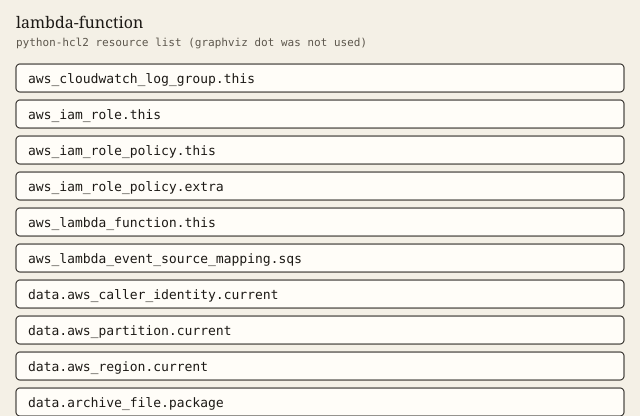

lambda-function
Zip-packaged function, retained log group, and a least-privilege execution role.
Tests passed 7 of 7. Failed 0.
Inputs
| Name | Type | Required | Description |
|---|---|---|---|
| additional_policy_json | string | no | Optional extra inline policy JSON. A bare star action is rejected. |
| environment | map(string) | no | Optional plain environment variables. Empty skips the environment block. |
| function_name | string | yes | Lambda function name. Also used for the execution role and log group. |
| handler | string | no | Function handler. |
| log_retention_days | number | no | CloudWatch log retention in days. Must be a value CloudWatch accepts. |
| memory_size | number | no | Function memory in megabytes. |
| reserved_concurrency | number | no | Reserved concurrent executions. Null leaves the account default unreserved. |
| runtime | string | no | Lambda runtime identifier. |
| source_dir | string | yes | Directory archived into the Lambda deployment package. The archive provider runs locally. |
| sqs_batch_size | number | no | Batch size for the optional SQS event source mapping. |
| sqs_queue_arn | string | no | Optional SQS queue ARN. When set, the module creates an event source mapping and queue permissions. |
| tags | map(string) | no | Extra tags merged onto every taggable resource. ManagedBy and Module are always set by the module. |
| timeout | number | no | Function timeout in seconds. |
| xray_enabled | bool | no | Turn on active X-Ray tracing and the matching write permissions. |
Outputs
| Name | Description |
|---|---|
| caller_context | Account, partition, and region resolved from data sources. |
| event_source_mapping_count | Number of SQS event source mappings. Zero unless sqs_queue_arn is set. |
| function_arn | Lambda function ARN. |
| function_name | Lambda function name. |
| log_group_name | CloudWatch log group name. |
| log_retention_days | Retention in days on the function log group. |
| policy_actions | IAM actions granted to the execution role. The module rejects a bare star action. |
| reserved_concurrency | Reserved concurrency, or null when unset. |
| role_arn | Execution role ARN. |
| tag_audit | Tags on every taggable resource this module creates. |
| xray_enabled | Whether active X-Ray tracing is on. |
Example
The caller supplies the region. This example does not embed an account id.
module "fn" {
source = "../.."
function_name = "demo-fn"
source_dir = "${path.module}/src"
tags = {
Example = "basic"
}
}
Tests
- default_retention passed
- custom_retention passed
- sqs_mapping passed
- xray_on passed
- reserved_concurrency passed
- reject_bad_retention passed
- reject_star_action passed
Mock plan excerpt
mocked provider: ARNs and IDs are simulated. This excerpt is from terraform test with a mocked provider, not a live plan.
mocked provider: ARNs and IDs are simulated. This is terraform test -verbose, not a live plan.
tests\lambda-function.tftest.hcl... in progress
run "default_retention"... pass
Terraform used the selected providers to generate the following execution
plan. Resource actions are indicated with the following symbols:
+ create
Terraform will perform the following actions:
# aws_cloudwatch_log_group.this will be created
+ resource "aws_cloudwatch_log_group" "this" {
+ arn = (known after apply)
+ id = (known after apply)
+ log_group_class = (known after apply)
+ name = "/aws/lambda/demo-fn"
+ name_prefix = (known after apply)
+ retention_in_days = 14
+ tags = {
+ "ManagedBy" = "terraform"
+ "Module" = "lambda-function"
+ "Owner" = "platform"
}
+ tags_all = (known after apply)
}
# aws_iam_role.this will be created
+ resource "aws_iam_role" "this" {
+ arn = (known after apply)
+ assume_role_policy = jsonencode(
{
+ Statement = [
+ {
+ Action = "sts:AssumeRole"
+ Effect = "Allow"
+ Principal = {
+ Service = "lambda.amazonaws.com"
}
},
Resources
graphviz dot was not installed. The figure is a python-hcl2 resource list.

Changelog
Changelog
All notable changes to this module are documented in this file.
The format is based on Keep a Changelog, and this module uses Semantic Versioning.
[1.0.0] - 2026-10-03
Added
- Zip packaging, a retained log group, an execution role, and an optional SQS event source.
Billable item names
Names only. This page does not quote a price. Example amounts, including a budget limit, are placeholders and are not recommendations. GuardDuty and Security Hub stay off unless a module switch is set, because those services are billable.
- AWS Lambda
- Amazon CloudWatch Logs
- AWS X-Ray